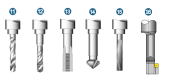
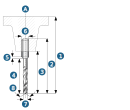
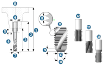
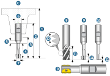
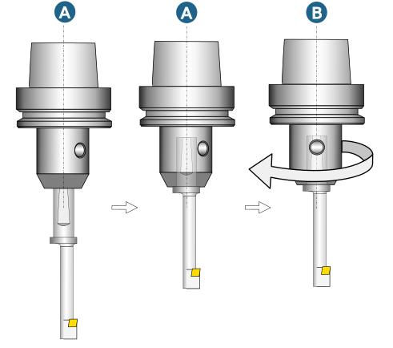

Drilling tool
The following drilling tools are available in the tool database:
(11) Drilling tool, (12) Tap drill, (13) Thread mill, (14) Countersink, (15) Reamer, (16) Back Boring Tool.
|  |
Drilling tool
(1) Gage length, (2) Tool length, (3) Tool reach, (4) Tip length, (5) Chamfer length, (6) Shank diameter, (7) Diameter, (8) Tip angle
|  |
Tap drill
(1) Gage length, (2) Tool length, (3) Tool reach, (4) Tip length, (5) Chamfer length, (6) Shank diameter, (7) Diameter,
Tip
Under Designation mode, select the desired entry from the list to automatically define the values for Diameter, Pitch (p) and Drill size based on the selected thread standard.
(8) Pitch (p), (9) Lead in length, (10) Lead in diameter, (11) Lead in angle,
(12) Tip type = Tap drill for through hole, (13) Tip type = Spiral flute (blind), (14) Tip type = Forming.
|  |
Thread mill
(1) Gage length, (2) Tool length, (3) Tool reach, (4) Tip length, (5) Chamfer length, (6) Shank diameter, (7) Diameter, (8) Tip type – Full thread – fix pitch, (9) Tip type – Partial thread – fix pitch, (10) Tip type – Single thread – variable pitch, (11) Cutting length, (12) Pitch.
|  |
Back Boring Tool
(1) Diameter, (2) Length, (3) Min. plunge diameter (4) Cutting edge position.
(A) Mounting direction: Right, (B) Mounting direction: Left.
The Mounting direction parameter indicates the mounting direction of the Insert in relation to the tool axis and is used to define the spindle orientation. If the mounting direction is Right, the Spindle orientation is Clockwise. If the mounting direction is Left, the spindle orientation is Counterclockwise.
The Cutting edge orientation parameter is currently not supported.
|
Example: |
(C) Back chamfering: (5) Reference point, (6) Hole diameter, (7) Reference point position. |
 |
|
Coupling rotation: Rotate the coupling of the tool holder around the Z axis so that the orientation of the holder corresponds to the orientation of the tool.
|
Example: |
(A) Coupling not rotated, (B) Coupling rotated by 45°. |
|

|
|
Tip
Import 3D data with the TOOL Builder to create Back Boring Tool types. For more information on this and on the position orientation of various holder types or extensions see the documentation TOOL Builder.